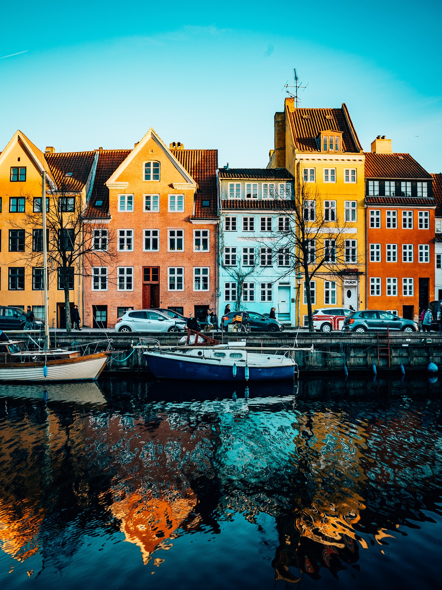
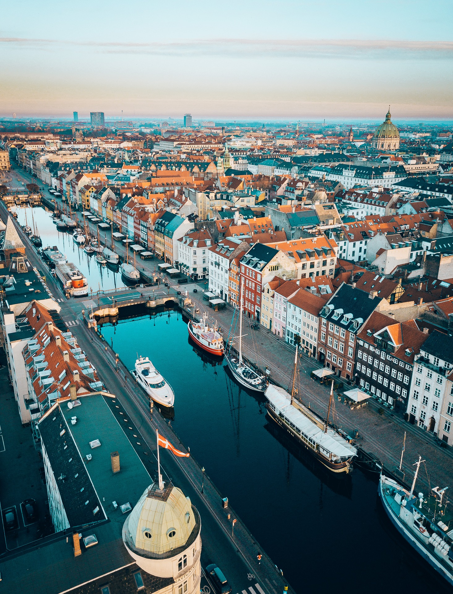
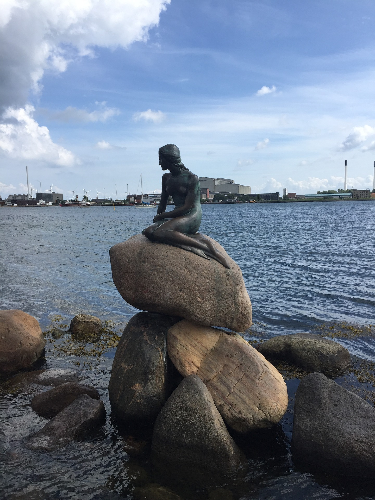
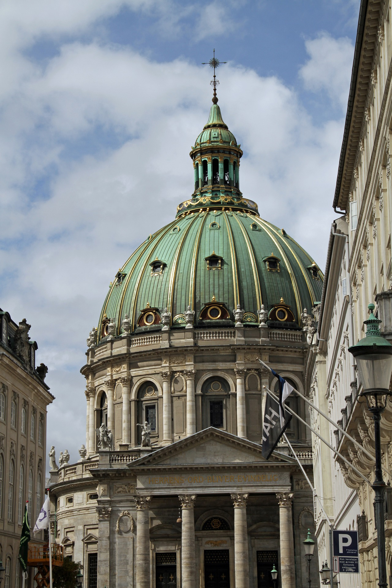

Things to see:




Nyhavn (New Harbour) is a 17th-century waterfront lined by colorful townhouses
Enjoy a lovely canal tour around Copenhagen's harbour and its many canals
The Little Mermaid statue is an icon of the city and a popular tourist attraction
Frederik's Church (The Marble Church) is an Evangelical Lutheran church in Copenhagen
If Copenhagen were a person, that person would be generous, beautiful, elderly, but with a flair. A human being that has certain propensities for quarrelling, filled with imagination and with appetite for the new and with respect for the old - somebody who takes good care of things and of people.
-Connie Nielsen
Call to action! It's time to say hello!
Sign up for our tour of the city by clicking the button on the right!